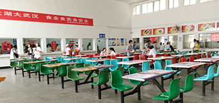

校内篇：
虽说长职食堂建筑不是很高大上，但却是学生吃饭地方的最佳选择，既方便快捷又美味实惠。目前食堂只支持校园一卡通支付，支付的方式还有待完善，但是呢，现金支付的话你是懂的哦。
南区食堂分两处，一处是大食堂，在综合实训楼旁边。里面设置六个窗口，提供早、中、晚餐。有各种各样的特色小吃，炒菜，锅仔、拉面等种类齐全。周末可以约几个朋友一起点菜，好吃又不贵。在大食堂旁边有个食堂，以卖湘菜为主，这里的炒菜是比较吃香的。另外一处是小食堂，也提供早、中、晚餐，但是这里最好吃的是中午的自助餐。离男寝比较近，是大多数男生的选择。
消费指南(早餐5元 中餐10元 晚餐7元)

校外篇：
不管是在光谷附近的南校区还是流芳园的东校区或者南湖旁的西校区，在校园外面有美食后街，地下美食广场、各种各样的酒店、饭店。南区对面是外卖店聚集地，一个电话就可以解决吃饭问题。关谷大厦4/5 楼层也有许多好吃的，周末去那儿是一个不错的选择。学姐特别推荐学校对面的兄弟酒家，里面的烤串、炒菜都挺好吃的，价格也不贵。